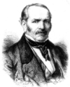

Federação Espírita Missionários da Luz
"O primeiro de todos os mandamentos é: 'Ouve, Israel! O Senhor nosso Deus é o único Senhor!'.
'Amarás, portanto, o Senhor, teu Deus, de todo o teu coração, de toda a tua alma, de todo o teu entendimento e de toda a tua força’.
E o segundo é: ‘Amarás o teu próximo como a ti mesmo’. Não existe qualquer outro mandamento maior do que estes”
Marcos 12:30-31

